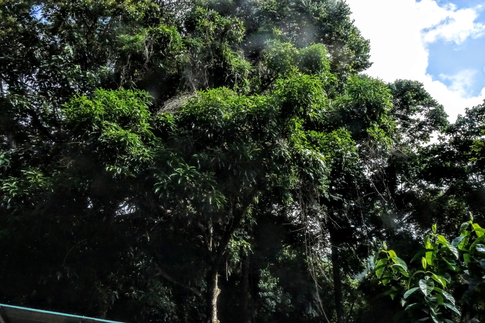
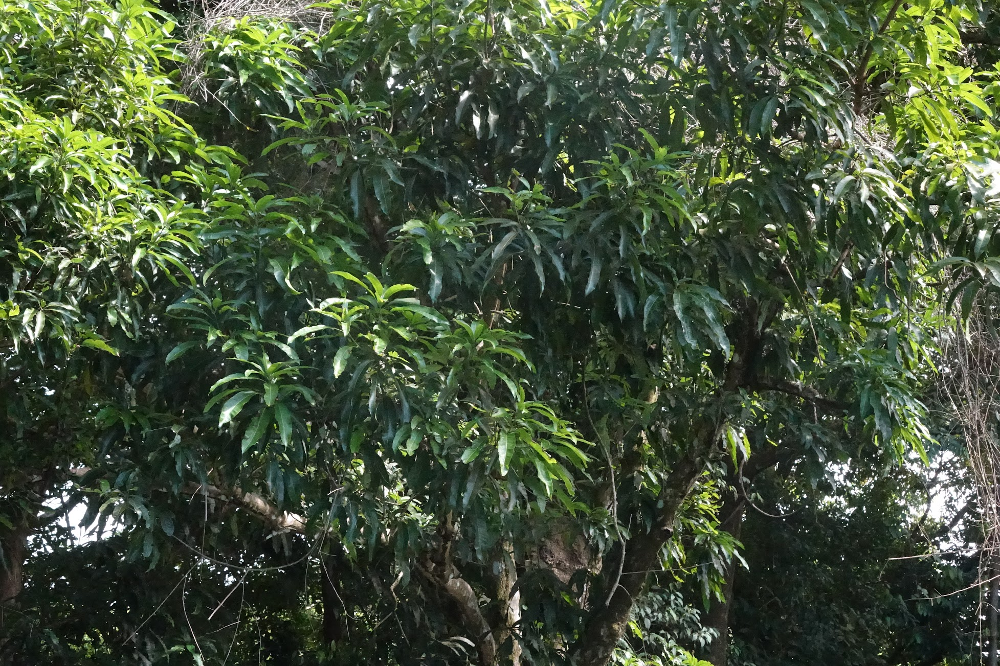
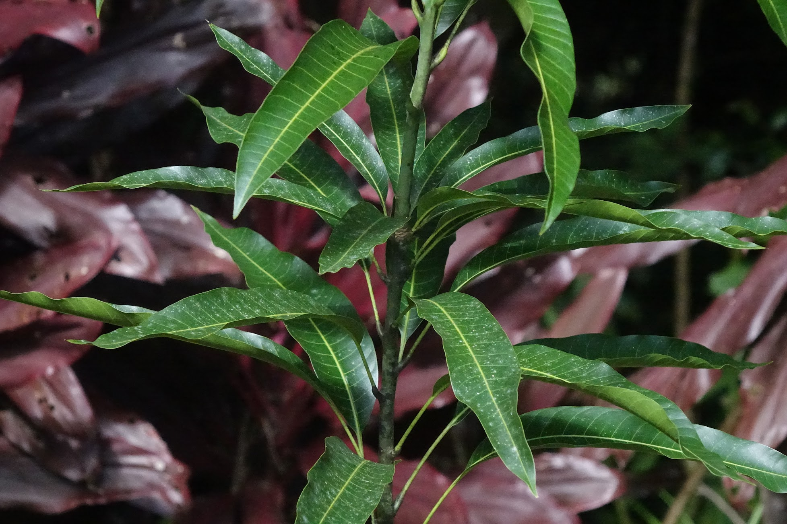

16. January 2022
Mango

Mango
Mangifera indica L.
Mango is an evergreen tree native to southern Asia, imported to the Americas in the sixteenth century. It can be pruned to remain a manageable size, but given the opportunity will grow to 30-40 meters in height. It bears a delicious sweet oblong fruit which can get to 10" in length, with a thin skin protecting a yellow juicy flesh around a single large central stone, which protects the seed. It’s a member of the family Anacardiacaea (Cashew) with sumac, poison ivy, poison oak, peruvian pepper, and pistacio as relatives. Its sap can, reputedly, blister the skin in the same way as poison ivy does; wood from the trees produces a highly irritant smoke when burned; pollen can exacerbate allergies.
Trees tend to bloom in dry season, and unless managed with fruiting older trees will tend towards biennial fruiting. Fruits reach maturity 4-5 months after flowering. Dr Campbell of Mango Men in Florida has developed several popular varieties (Green Dreams' Pete has interviewed him several times in Youtube videos); he advocates pruning to 3 meters, maintaining it as a large bush, with regular tipping and pruning to spur new growth.
Growing Mango
We live on a reforested finca which used to have mango orchards. There is at least one fairly mature tree on our property, though there may be more to find in the jungle.
Tree Above Workshop
This tree (around 15-20 meters tall) was completely covered in vines when we moved into the house, 12 months before these photos were taken. Around 4 months after our purchase, we had an open air workshop constructured, during which all of the vines were cut. The mango tree is on the side of the shed, and the metal roof of the shed actually encircles the trunk. As the vines died and fell away over the next couple of months, the tree became covered with a flush of new leaves. As we go into dry season we are hoping it will fruit.


Nursery Bought Seedling
This seedling (unknown variety) was bought from a local nursery and has yet to be planted. Currently around 1.5 meters tall.
2022-01-16: This seedling has now been planted out in the understory orchard, as an experiment. I intent to keep it pruned to a manageable size, so a week or so before planting I cut the main stem at around 75cm. (I divided the tip into cuttings and pushed into a pot in an attempt to root them.)

–
Original post: 2021-12-16 Update 1: 2022-01-16 - update of mango seedling, improved description with background from Morton